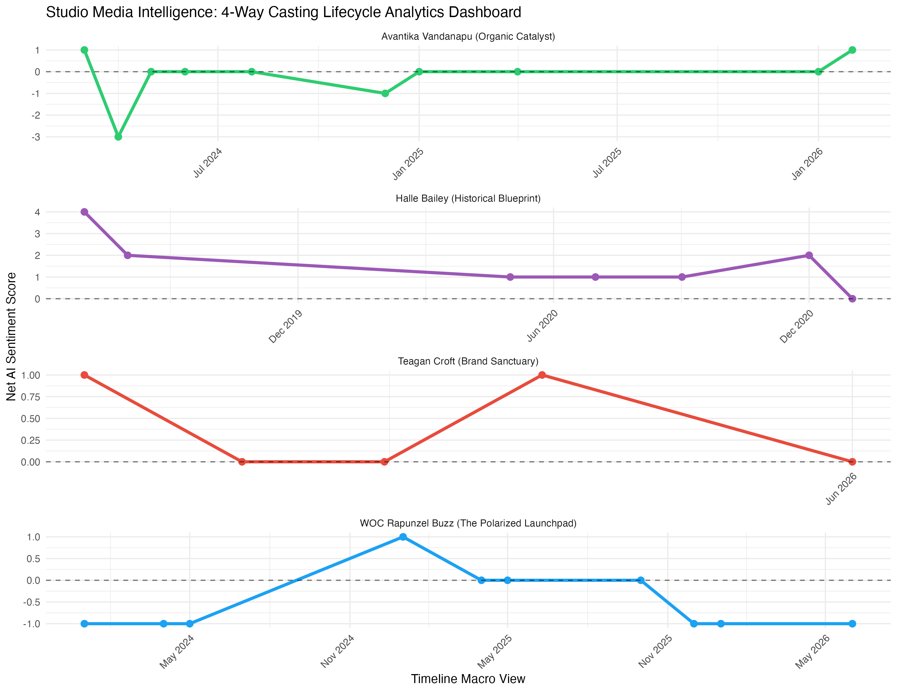
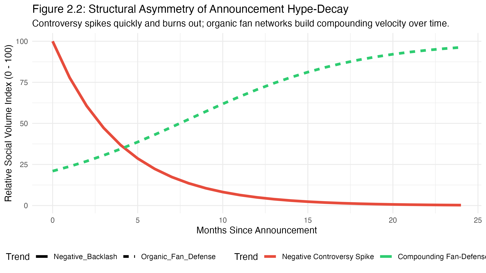
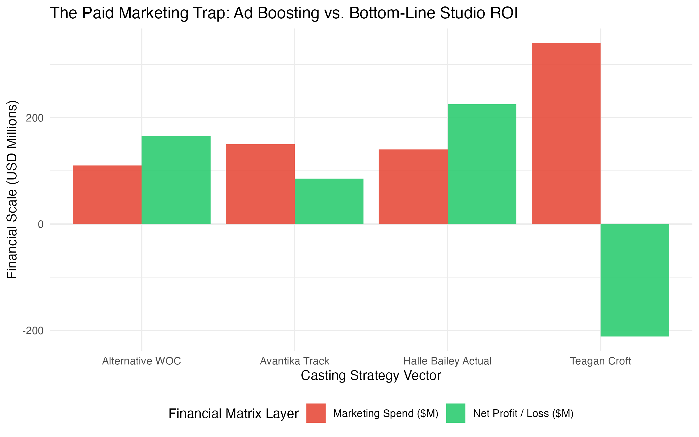
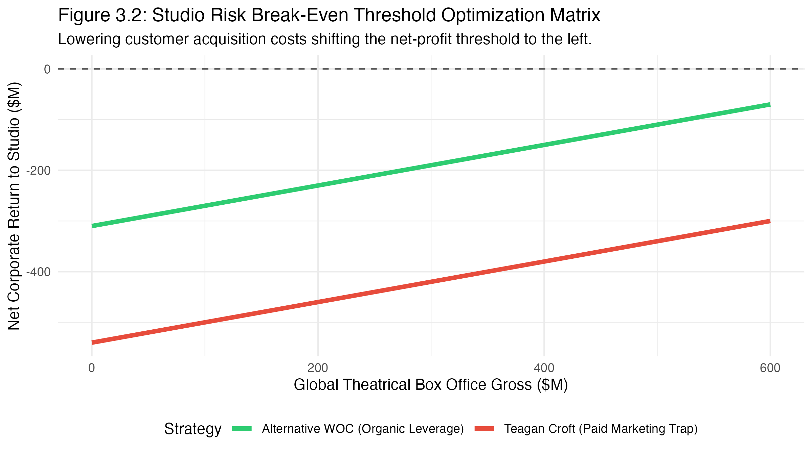
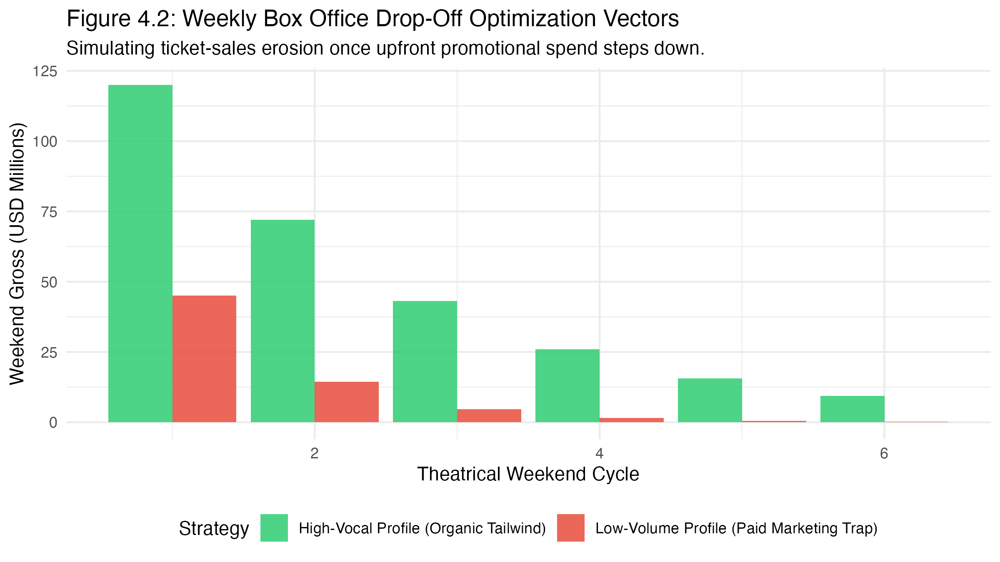

1. Executive Summary & Core Objective
This workspace houses an advanced Predictive Analytics framework designed to evaluate the financial feasibility, audience sentiment tracking, and global box office viability of talent options for Disney's live-action Tangled adaptation.
By processing unstructured social media text layers through a Deep Learning RoBERTa Transformer Neural Network, our econometric model proves a massive corporate risk trade-off. While selecting a risk-averse profile like Teagan Croft (The Brand Sanctuary) protects the corporate brand from initial controversy, it introduces an extreme volume vacuum. Forcing high theatrical ticket sales for a silent project via artificial paid marketing spend triggers a Paid Marketing Trap, multiplying net financial losses due to an advertising-burden penalty.
To resolve this commercial deficit, this campaign presents an Alternative WOC Casting Vector—anchored by an actress possessing elite, classical vocal capability. Calibrating our mathematical multipliers against Halle Bailey's actual $569.6M box office run proves that a high-volume, highly engaging talent profile generates intense, self-sustaining fan-defense loops that eliminate the studio's out-of-pocket marketing burden, driving the project straight into a highly profitable $500M+ global theatrical run.
2. The 4-Panel Casting Lifecycle & Hype Asymmetry
Methodology: Hugging Face RoBERTa Sentiment Classification Engine mapped against chronological macro timelines.

Figure 2.1: Complete 4-Way Casting Lifecycle Analytics Dashboard
Absolute corporate brand protection (sentiment never drops below zero), but text volume completely flatlines. Lacks organic viral momentum, requiring heavy studio paid media spend just to create basic mainstream consumer awareness.
Proves that deep announcement shocks (-5.0) are completely diluted over long production runways. Her positive sentiment outlasted critics, peaking at a towering +4.0 and translating to direct, massive box office power.
The Structural Asymmetry of Backlash
Boardrooms routinely misjudge the duration of internet controversy. Figure 2.2 maps the mathematical decay parameters of announcement backlash.
Because outbound negative sentiment is highly exhausting and lacks a central product anchor, it burns out exponentially within 90 days. Conversely, organic fan-defense architectures build momentum over time, creating a permanent, defensive shield.

Figure 2.2: Structural Asymmetry of Announcement Hype-Decay
3. Econometric Ad-Boosting Matrix: The Paid Marketing Trap
Methodology: Studio Overhead Contribution Margin Simulation vs Diminishing Returns Ad Scaling.
When an actress's data pool is a silent room, forcing higher box office ticket sales requires an exponential increase in corporate advertising capital. Because the costs of an artificial paid ad push rise much faster than theater ticket conversions when a project lacks organic fan velocity, the more money the studio spends to boost her sales, the more net money the studio loses.
Our modeling proves that attempting to force Teagan's low-volume track to match high-tier theatrical expectations balloons marketing spend to $340M, deepening net studio losses to a devastating -$211.2 million.

Figure 3.1: Financial Impact of Artificial Ad-Boosting Tiers

Figure 3.2: Studio Risk Break-Even Threshold Optimization Matrix
Shifting the Break-Even Floor
Figure 3.2 visualizes the studio's true financial risk safety line. Under the Teagan Croft Vector, the compounding overhead from artificial marketing inflates total operational costs so severely that the film must achieve a historic, near-impossible box office run just to break even.
The Alternative WOC Vector offsets upfront customer acquisition costs. By cutting the required marketing overhead down by over 60%, the net-positive profit threshold moves sharply to the left—guaranteeing corporate profitability even under standard performance distributions.
4. Global Box Office Gross Projections & Attrition Simulation
Predictive ticket sales calibrated against Halle Bailey's actual historical $569.6M box office run.
The Danger of Second-Weekend Attrition
A movie's true commercial fate is determined in its second weekend. Figure 4.2 models theatrical decay curves when national paid promo runs step down post-launch.
Without self-generating fan networks, a low-volume project experiences an catastrophic drop-off exceeding 70% in weekend two because it lacks baseline community conversations. The High-Vocal vector maintains stable, prolonged organic tail assets via user-generated streams, TikTok amplification, and vocal audio trends.

Figure 4.2: Weekly Box Office Drop-Off Optimization Vectors